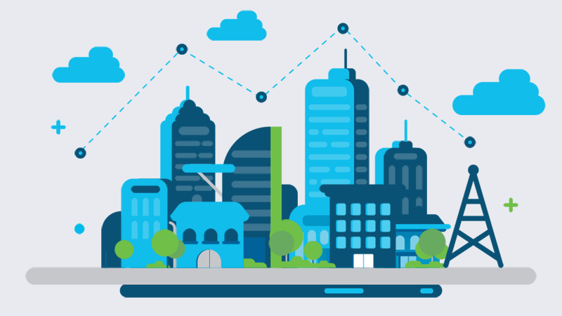

Smart - Grid
Por um futuro mais sustentável!

Mas o que é Smart - Grid?

O Smart Grid é uma rede elétrica inteligente que utiliza tecnologias digitais e de comunicação para otimizar a produção, distribuição e consumo de energia. Diferente das redes tradicionais,
que operam de maneira unidirecional e centralizada, os Smart Grids são sistemas interativos que permitem o monitoramento em tempo real, ajustes automáticos e melhor gestão dos recursos energéticos.
Esses sistemas integram fontes de energia renováveis, como solar e eólica, que são intermitentes e imprevisíveis, ajustando a oferta e a demanda de forma mais eficiente. Além disso, os Smart Grids
ajudam a reduzir as perdas de energia durante a transmissão e distribuição e a melhorar a confiabilidade do fornecimento, especialmente em situações de alta demanda ou falhas no sistema.
A digitalização também permite o uso de medidores inteligentes, que fornecem dados detalhados sobre o consumo de energia, promovendo uma maior conscientização e eficiência no uso. A automação de
processos permite que falhas sejam identificadas rapidamente e que a rede se recupere mais rapidamente, minimizando o impacto das interrupções.O uso de tecnologias como sensores, análise de dados
e automação faz do Smart Grid um componente essencial na transição para um futuro energético mais sustentável, eficiente e resiliente.
Quais são os benefícios do Smart - Grid?
1. Maior eficiência energética
2. Integração de fontes renováveis
3. Confiabilidade e resiliência do sistema
4. Monitoramento e controle em tempo real
5. Redução de custos operacionais
6. Empoderamento dos consumidores
7. Contribuição à sustentabilidade
8. Preparo para o futuro energético
Por que mudar para o Smart - Grid?
O uso do método Smart Grid é fundamental para modernizar o sistema elétrico, superando as limitações das redes tradicionais. Ele se destaca por melhorar a
eficiência energética, reduzir desperdícios e integrar fontes renováveis de forma eficaz. A capacidade de monitoramento em tempo real permite ajustes imediatos
entre oferta e demanda, aumentando a confiabilidade e a resiliência do sistema, essencial em situações de crises ou picos de consumo.
Além disso, o Smart Grid empodera os consumidores com informações detalhadas sobre o uso de energia, incentivando um consumo mais consciente e econômico.
Do ponto de vista ambiental, ele contribui para a sustentabilidade, facilitando o uso de fontes limpas como solar e eólica, além de reduzir emissões de carbono.
Por fim, o Smart Grid prepara a rede elétrica para o futuro, integrando tecnologias como veículos elétricos e sistemas de armazenamento de energia, garantindo
flexibilidade e eficiência econômica. Sua implementação é uma resposta estratégica às demandas crescentes de sustentabilidade, confiabilidade e inovação tecnológica
no setor de energia.